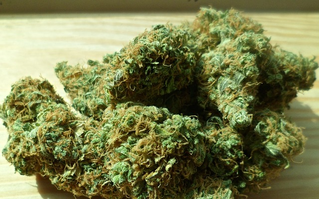
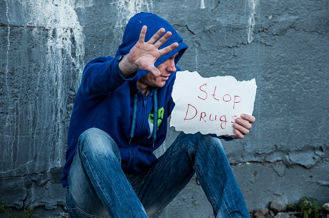

| Home | Older Posts |
|---|
10th April 2019
We’re doing occupations. Welcome to the fourth blog post in this series. The main aim of this blog is to talk about Occupational Therapy and Occupational Science.
I am going to tell you a story about myself that I am not proud of and that is why I haven’t openly shared this story before. Between the ages of 16 to 19, I was regularly using a variety of drugs and I guess you could say that smoking cannabis was one of my daily occupations. At the age of 18½, I started training Kung Fu. I would usually use drugs before each daily Kung Fu training session. Over period of a few months, I started to develop some grandiose and delusional beliefs that I was developing chi power and that certain people were possessed by demons. My activities of daily living started to decline. I became paranoid and developed inappropriate social behaviour, which resulted in the loss of my job.

One night I believed that my training partner was the son of the devil, who was sent to the destroy the world. I remember being so frightened that I ran 10 kilometres to my Kung Fu Master’s home to tell him what I had discovered. I also told him that I had been using drugs. The Master became was very worried about me; he advised me to stop using drugs and then drove me home to go to sleep. Unfortunately I didn’t sleep very well that night, as I believed that there was a demon outside my house that was trying to kill me.
The next day I asked my friend to take me to the local hospital for a psychiatric assessment. The psychiatrist told me that I had experienced a drug induced psychotic episode, he provided me with psycho-education and recommended that I cease all drug use. Luckily, I didn’t need to be commenced on anti-psychotic medication. This negative event scared me so much, that I immediately ceased all drug use. I didn’t even drink any alcohol for 6 months. The Kung Fu Master also asked me to attend the Thai Temple to be blessed by a Buddhist Priest, which actually helped to calm my thoughts. It took me a week or two to feel normal again and to fully regain my occupational functioning.

I soon found a good long-term job, eventually returned to study and I became an Occupational Therapist approximately 11 years later. Though I wouldn’t recommend this pathway to anyone, this lived experience has helped me to relate to clients with similar experiences and to better understand how drugs can negatively affect occupational performance.
Keep on doing occupations!
Neil Woodroffe, Occupational Therapist
Doing Occupations (2019)